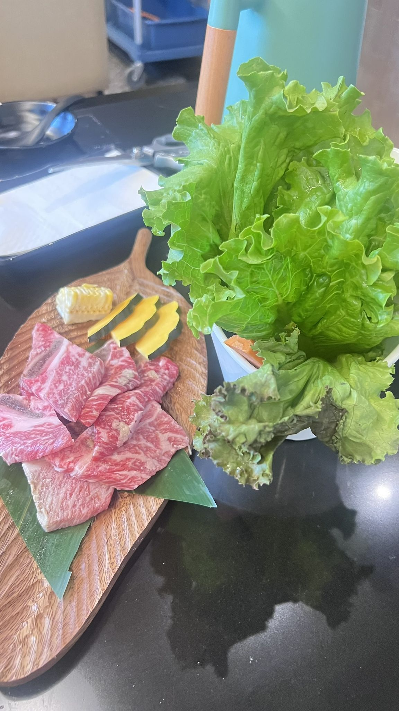
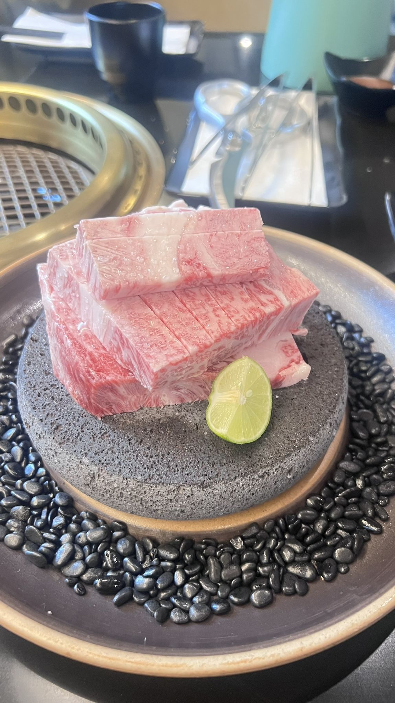
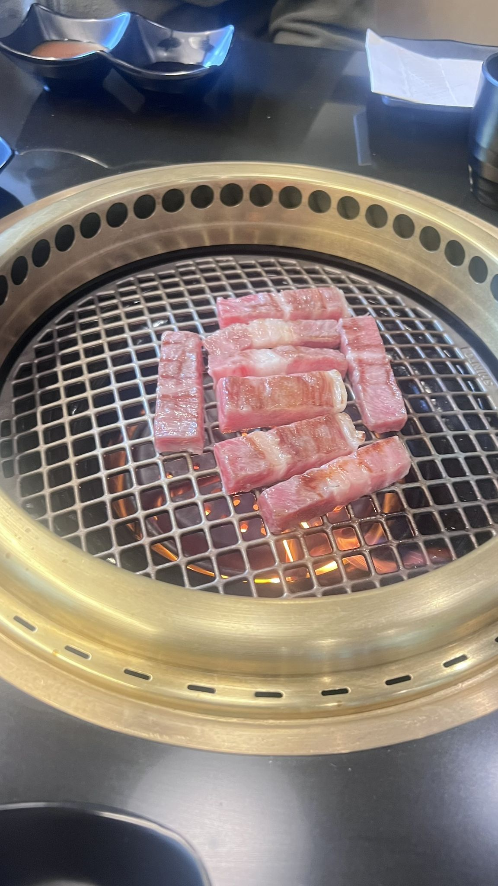

Marbling you can see
From Japanese A5 wagyu to prime kalbi, the fat is the flavor. Watch it melt on the grate.

Our Purveyor
Our meat comes from Savenor’s Butcher & Market, a Cambridge institution since 1939 and the butcher Julia Child trusted for decades.
Since 1939
Savenor’s opened in Cambridge in 1939 as a gourmet butcher shop and grocer with one goal: the finest meat they could find.
More than eighty years later, it’s still a neighborhood butcher at heart, with shops in Cambridge and on Beacon Hill. They practice whole-animal butchery and supply many of Boston’s best restaurants.
That’s the counter our meat comes from.

On our grillThe Julia Child connection
Julia Child was a loyal Savenor’s customer long before she became a household name.
When she brought French cooking to American kitchens on The French Chef, the meat came from Savenor’s, for the show’s entire eleven-year run. Her friendship with butcher Jack Savenor became part of Boston food lore, and Savenor’s has been known as “Julia Child’s butcher” ever since.
Why it matters
Yakiniku is simple on purpose: a hot grill, a quick sear, and a dip of sauce. There’s no braise or heavy gravy to cover for an average cut. That’s why we partner with Savenor’s.
From Japanese A5 wagyu to prime kalbi, the fat is the flavor. Watch it melt on the grate.
Thin slices cook in moments at your table, so every cut has to be good enough to eat almost as-is.
Working with a butcher with eighty-plus years of standards behind it lets us focus on the grill and the hospitality.

On the grillOn the menu
A few of the cuts waiting for your grill.
Exceptional marbling, buttery richness.
Bone-in, our signature marinade.
Juicy and springy with a rich texture.
Lean and tender with a buttery-soft bite.